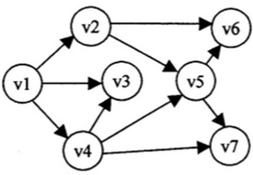
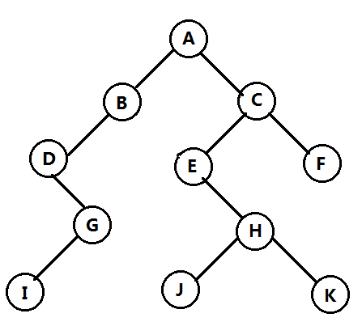
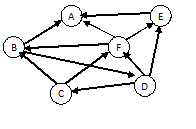
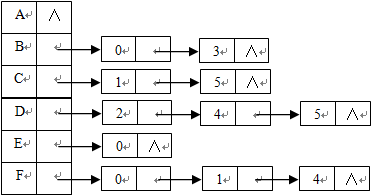
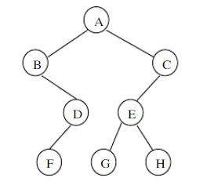
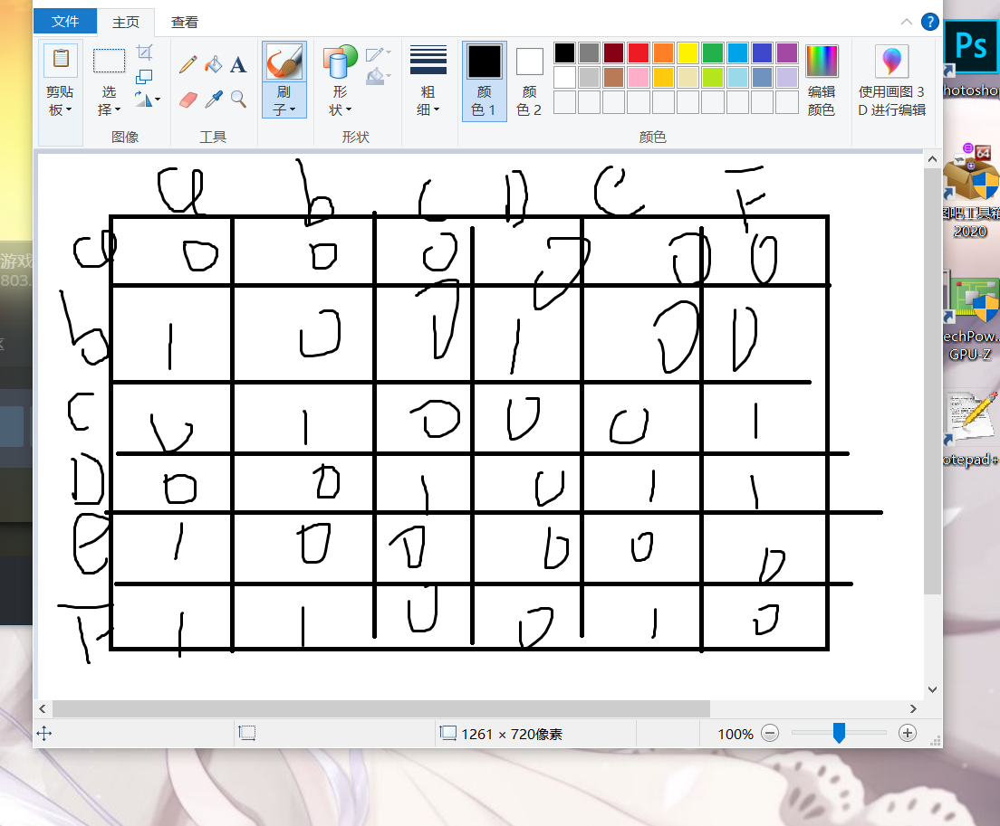
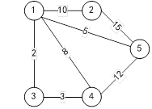
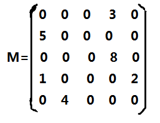
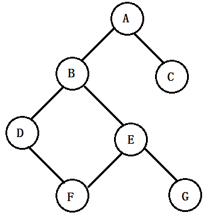
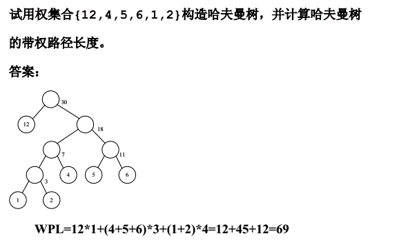

选择
1.若具有n个顶点的无向图采用邻接矩阵存储方法,该邻接矩阵一定为一个( D)。
A.一般矩阵
B.稀疏矩阵
C.对角矩阵
D.对称矩阵
2.串的长度是指(B )。
A.串中所含不同字母的个数
B.串中所含字符的个数
C.串中所含不同字符的个数
D.串中所含非空格字符的个数
3.在一个具有n个顶点的无向图中,要连通全部顶点至少需要( B)条边。
A.n
B.n-1
C.n+1
D.2n
4.有向图的邻接表第i个链表中的边界点数目是第i个顶点的( C)。
A.度数
B.入度
C.出度
D.边数
5.线性单链表的一个结点中有(A )个指针。
A.1
B.2
C.3
D.4
6.对于一个具有N个顶点的图,若用邻接矩阵表示,则该矩阵的大小为( D)。
A.N
B.(N-1)2
C.(N+1)2
D.N2
7.以v1为起始结点对下图进行深度优先遍历,正确的遍历序列是(D)。

A.v1,v2,v3,v4,v5,v6,v7
B.v1,v2,v5,v4,v3,v7,v6
C.v1,v2,v3,v4,v7,v5,v6
D.v1,v2,v5,v6,v7,v3,v4
8.算法分析的目的是(C )。
A.找出数据结构的合理性
B.研究算法中的输入和输出的关系
C.分析算法的效率以求改进
D.分析算法的易懂性和文档性
9.用类C语言描写的算法( C)。
A.可以直接在计算机上运行
B.可以描述解决思想和基本框架
C.不能改写成C语言程序
D.与C语言无关
10.算法能正确实现预定功能的特性称为(A )。
性
B.可读性
C.健壮性
D.高效率
11.下列时间复杂度中最好的是( A)。
A.O(1)
B. O(n)
C. O(log2n)
D. O(n2)
12.线性表是( A)。
A.一个有限序列,可以为空
B.一个有限序列,不能为空
C.一个无限序列,可以为空
D.一个无限序列,不能为空
13.线性表中( C)只有一个直接前驱和一个直接后继。
A.首元素
B.尾元素
C.中间元素
D.所有元素
14.若线性表采用顺序存储结构,每个元素占用4个存储单元,第1个元素的存储地址为100,则第15个元素的存储地址是(A )。
A.154
B.160
C.415
D.156
15.若长度为n的线性表采用顺序存储结构,在表的第i个位置插入一个数据元素,i的合法值应该是(B )。
A.i>0
B.1≤i≤n+1
C.i<=n
D.1≤i≤n
16.若长度为n的非空线性表采用顺序存储结构,删除表中第i个数据元素,i的合法值应该是(D )。
A.i>0
B.1≤i≤n+1
C.i<=n
D.1≤i≤n
17.若长度为n的非空线性表采用顺序存储结构,删除表中的第i个数据元素,需要移动的元素个数应该是(B )。
A.n+i
B.n-i
C.n-i-1
D.n-i+1
18.若长度为n的非空线性表采用顺序存储结构,在表的第i个位置插入一个数据元素,需要移动的元素个数应该是(B )。
A.n-i
B.n-i+1
C.n+i
D.n-i-1
19.若线性表采用顺序存储结构,每个元素占用4个存储单元,第1个元素的存储地址为100,则第12个元素的存储地址是( B)。
A.112
B.144
C.148
D.412
20.线性表采用链式存储时,其地址( D)。
A.必须是连续的
B.部分地址必须是连续的
C.一定是不连续的
D.可以连续也可以不连续
21.若带头结点的单链表head为空表,则满足的条件是(C )。
A.head==NULL
B.head—>next!=NULL
C.head—>next==NULL
D.head!=NULL
22.若循环链表head非空,则其尾结点rear应满足的条件是( C)。
A.rear—>next==NULL
B.rear ==NULL
C.rear—>next== head
D.rear == head
23.在一个非空单链表中,已知q所指结点是p所指结点的直接前驱结点,若再q和p之间插入结点s,则应执行操作是(A )。
A.q—>next=s;s—>next=p;
B.p—>next=s;s—>next=q;
C.s—>next=p—>next;p—>next=s;
D.s—>next=s—>next; s—>next=p;
24.在一个非空单链表中,删除p所指结点的直接后继结点,则应依次执行的操作是( B)。
A.r=p—>next;p—>next=r;free(r);
B.r=p—>next;p—>next= r—>next;free(r);
C.r=p—>next;p—>next=r—>next;free(p) ;
D.p—>next=p—>next—>next;free(p);
25.栈是限定在( C)处进行插入或删除操作的线性表。
A.端点
B.栈底
C.栈顶
D.中间
26.栈与一般线性表区别主要在(D )。
A.元素个数
B.元素类型
C.逻辑结构
D.插入、删除元素的位置
27.若5个元素的出栈序列为1,2,3,4,5,则进栈的顺序可能是( C)。
A.2,4,3,1,5
B.3,1,4,2,5
C.3,1,2,5,4
D.2,3,1,5,4
28.若栈采用顺序存储结构,删除栈中一个元素时,栈顶指针top的变化是(B )。
A.不变
B.–top
C.++top
D.top=0
29.若栈采用顺序存储结构,向栈中插入一个元素,栈顶指针top的变化是( D)。
A.不变
B.top=0
C.–top
D.++top
30.队列的特点是(B )。
A.先进先出
B.后进先出
C.先进后出
D.不进不出
31.在循环队列中,若front和rear分别指向对头元素和队尾元素,则判断循环队列为空的条件是(A )。
A.front=rear
B.front=rear+1
C.rear = front +1
D.front=0
32.若队列采用链式存储结构,front和rear分别指向对头元素和队尾元素,删除队列中的一个元素时,应执行的操作是: p = front;( D);free(p);
A.front=p
B.rear =p
C.rear = p —>next
D.front = p—>next
33.若栈采用链式存储结构,栈顶指针为top,向栈中插入一个由p指向的新结点时,应执行的操作是( C);top=p;
A.p=top
B.top = p
C.p—>next =top
D.top—>next = p
34.判断一个栈S(最多元素有M个)为满栈的条件是(D )。
A.S—>top==0
B.S—>top!=0
C.S—>top==M-1
D.S—>top==M
35.用链表表示线性表的优点是(C )。
A.便于随机存取
B.花费的存储空间比顺序表少
C.便于插入与删除
D.数据元素的物理顺序与逻辑顺序相同
36.对于一个10阶对称矩阵,若按行序存储下三角(包括对角线)的元素,则矩阵第6行3列的元素地址是一维数组中的第( D)个元素。
A.9
B.12
C.13
D.18
37.广义表((a,b),c,d)的表头是(a,b),表尾是( D)。
A. a
B. d
C.(a,b)
D.(c,d)
38.稀疏矩阵一般是指( C)。
A.非零元素和零元素都较少
B.非零元素较多
C.零元素较多
D.非零元素和零元素都比较多
39.字符串通常采用的两种存储方式是( C)。
A.散列存储和索引存储
B.索引存储和链式存储
C.顺序存储和链式存储
D.散列存储和顺序存储
40.具有线性结构的数据结构是( C)。
A.树
B.图
C.栈和队列
D.广义表
41.下列叙述正确的是( A)。
A.线性表是线性结构
B.栈和队列是非线性结构
C.线性链表是非线性结构
D.二叉树是线性结构
42.在一个具有n个顶点和e条边的有向图的邻接矩阵中, 表示边存在的元素个数为( C)。
A.n
B.n×e
C.e
D.2×e
43.下列存储形式中,(C )不是树的存储形式。
A.双亲表示法
B.左子女右兄弟表示法
C.广义表表示法
D.顺序表示法
44.按照二叉树的定义,具有3个结点的二叉树有( B)种形态。
A.3
B.4
C.5
D.6
45.若一棵满二叉树有n个结点,m个叶子结点,深度为h,则下面关系中正确的是(B )。
A.n=h+m
B.n=2h-1
C.m=n/2
D.n=m+1
46.在一棵二叉树上第4层的结点数最多为( C)。
A.2
B.4
C.6
D.8
47.已知某二叉树的先序遍历序列为cedba,中序遍历序列为debac,则它的后序遍历序列为(C )。
A.acbed
B.deabc
C.dabec
D.decab
48.在一棵完全二叉树中,若编号为i的结点有右孩子,则该结点的右孩子编号为(B )。
A.2i
B.2i+1
C.2i-1
D.i/2
49.有权值分别为3,8,6,5,2的叶子结点生成一棵哈夫曼树,则它的带权路径长度为(D )。
A.48
B.72
C.55
D.53
50.树形结构是数据元素之间存在一种(D )。
A.一对一关系
B.多对多关系
C.多对一关系
D.一对多关系
判断
51.完全二叉树的某结点若无左孩子,则它必是叶子结点。（ √ ）
52.链队列的出队操作总是需要修改尾指针。（ × ）
53.一个子串在包含它的主串中的位置是指子串的第一个字符在主串中首次出现的位置。（ √ ）
54.栈和队列的存储方式,既可以是顺序方式,又可以是链式方式。（ √ ）
55.有e条边的无向图,在邻接表中有e个结点。（ × ）
56.对任何数据结构而言,链式存储结构一定优于顺序存储结构。（ × ）
57.已知二叉树的前序遍历和后序遍历序列并不能唯一地确定这棵树,因为不知道树的根节点是哪一个。（ × ）
58.关键路径是时间结点网络中从源点到汇点的最长路径。（ × ）
59.栈和队列都是运算受限的线性表。（ × ）
60.对于不同的特殊矩阵应该采用不同的存储方式。（ √ ）
61.十字链表是无向图的一种存储结构。（ × ）
62.二叉树的前序遍历中,任意结点均处在其子女结点之前。（ √ ）
63.链表是采用链式存储结构存储的线性表,进行插入、删除操作时,在链表中比在顺序存储结构中效率高。（ √ ）
64.由树转换成二叉树,其根节点的右子树总是空的。（ √ ）
65.AOE网中一定只有一条关键路径。（ × ）
66.顺序存储结构的主要缺点是不利于插入或删除。（ √ ）
67.队列是一种插入与删除操作分别在表的两端进行的线性表,是一种先进后出型结构。（ × ）
68.满二叉树也是完全二叉树。（ √ ）
69.线性表的特点是每个元素都有一个前驱和一个后继。（ × ）
70.循环队列的引入,目的是为了克服假溢出。（ √ ）
71.二叉树只能用二叉链表表示。（ × ）
72.循环链表不是线性表。（ × ）
73.已知指针P指向链表L中某结点,执行语句P=P->next不会删除该链表中结点。（ √ ）
74.任何有向网络(AOV网络)拓扑排序的结果是唯一的。（ × ）
75.顺序存储方式只能用于存储线性结构。（ × ）
76.有回路的图不能进行拓扑排序。（ × ）
77.在链栈上进行进栈操作时,不需判断栈满。（ √ ）
78.如果n个顶点的无向图有n条边,则图中肯定有回路。（ × ）
79.哈夫曼树中不存在度为1的结点。（ √ ）
80.有向图的邻接表和逆邻接表中的结点数肯定是相同的。（ √ ）
81.稀疏矩阵就是矩阵的元素很少。（ × ）
82.单链表中的头结点就是单链表的第一个结点。（ × ）
83.线性表的逻辑顺序总是与物理顺序一致。（ × ）
84.顺序表和一维数组一样,都可以按下标随机(或直接)访问。（ √ ）
85.对稀疏矩阵进行压缩存储是为了节省存储空间。（ √ ）
86.对二叉排序树进行中根遍历,可以得到结点的有序序列。（ × ）
87.在线性表中删除中间的结点时,只需将被删除结点释放。（ × ）
88.顺序查找法适用于存储结构为顺序或链接存储的线性表。（ √ ）
89.线性表若采用链式存储表示,则在删除时不需要移动元素。（ √ ）
90.采用不同的遍历方法,所得到的无向图的生成树总是相同的。（ × ）
问答题
91.已知二叉树形态，请分别写出该二叉树的先序、中序和后序访问序列。

答案：
先序遍历序列为：ABDGICEHJKF
中序遍历序列为：DIGBAJEHKCF
后序遍历序列为：IGDBKJHEFCA
92.对于图，所示的有向图，试画出相应的邻接表。答题说明：链表的表示形式：顶点A->2->9->∧。

答案：

93.设一个二叉树的先序序列是：ABDFCEGH，中序序列是：BFDAGEHC，请画出这课二叉树，并写出该二叉树的后序序列。
答案：

后序序列：FDBGHECA
94..已知一个不带头结点的单链表list，设计一个算法void DelMax(LinkList *list)，删除链表中数据域值最大的那个结点。
答案：
void DelMax(LinkList *list)
{ Node *p,*q,*r,*s;
q=*list; p=list->next;
r=*list;
while(p!=NULL) {
if(p->data>q->data)
{ q=p;//q当前最大值结点
s=r;//当前最大结点前驱 }
r=p;
p=p->next;
}
if(q==*list) *list=(*list)->next;
else s->next=q->next;
free(q);
}
95.对于图所示的有向图，试画出相应的邻接矩阵。

答案：

96.根据数据元素之间的不同关系,数据的逻辑结构包括集合结构、(_______)、树形结构和网状结构(图状结构)。
答案： 线性结构
97.数据的存储结构被分为顺序存储结构和(_______)。
答案：链式存储结构
98.数据结构按逻辑结构可分为两大类,分别是(_______)和非线性结构。
答案：线性结构
99.算法的五个重要特性是有限性、(_______)、可行性、输入和输出。
答案：确定性
100.评价算法性能优劣的两个重要指标是(_______)和空间复杂度。
答案：时间复杂度
101.在程序设计中,通常采用(_______)来描述线性表的顺序存储结构。
答案：数组
102.组成串的数据元素只能是(_______)。
答案： 字符
103.表示图的两种常用存储结构为(_______)和邻接表。
答案：邻接矩阵
104.线性表的链式存储结构主要包括( 单链表 )、循环链表和双向链表三种形式。
105.若只需对线性表较少进行插入和删除操作,则该线性表宜采用( 顺序 )存储结构。
106.若只需对线性表频繁地进行插入和删除操作,则该线性表宜采用(_______)存储结构。
答案：链式
107.栈和队列的逻辑结构都是(_______)结构。
答案：线性
108.队列的插入操作在(_______)进行。
答案：队尾
109.栈又称为后进先出表,队列又称为( 先进先出 )表。
110.已知顺序栈s,在对s进行进栈操作之前要先判断(_______)。
答案：栈满
111.已知顺序栈s,在对s进行出栈操作之前要先判断(_______)。
答案：栈空
112.以折半查找方法在一个查找表上进行查找时,该查找表必须组织称顺序存储的(_______)表。
答案：有序
113.在一个稀疏矩阵的三元组表中,每个非零元素对应的三元组包括行号、列号和(_______)。
答案：元素值
114.稀疏矩阵常用的压缩存储方法有两种:分别是三元组和(_______)存储。
答案：十字链表
115.HL为带头结点的单链表的表头指针,判断链表为空的条件是(_______)。
答案：HL->nex==NULL
116.在一棵树中,(_______)结点没有双亲。
答案：根
117.深度为5的满二叉树的结点个数为(30),叶子结点个数为16。
118.若具有n个结点的二叉树采用二叉链表存储结构,则该链表中有( 2n )个指针域。
119.二叉树的链式存储结构有(_______)和三叉链表。
答案：二叉链表
120.线索二叉树中,每个结点的空的左孩子指针用于保存某种遍历次序下该结点的(_______)地址。
答案：前驱结点
121.哈夫曼树又称为(最优二叉树),是相同叶子节点所构成的二叉树中带权路径长度WPL最短的二叉树。
122.有向图的常用存储结构有( 邻接矩阵 )、邻接表和十字链表。
123.在表示有向图的邻接矩阵中,第i行中非零元素的个数等于顶点的(_______)。
答案：出度
124.在表示有向图的邻接矩阵中,第i列中非零元素的个数等于顶点的(_______)。
答案：入度
125.在无向图G的邻接矩阵A中,若A[i][j]等于1,则A[j][i]等于( 1 )。
126.若无向图中有m条边,则表示该表的邻接表中有(_______)个结点。
答案：2m
127.图的深度优先遍历算法类似于树的(_______)遍历。
答案：先根
128.图的遍历通常有两种:广度优先遍历( 深度优先 )遍历。
129.一个有n个顶点的有向完全图的弧的数目为(_______)。
答案：n(n-1)
130.普里姆算法和克鲁斯卡尔算法均用于构造( 最小生成树 )。
131.若一个连通图中每个边上的权值均不同,则得到的最小生成树是( 唯一 )(唯一/不唯一)的。
132.普通树转换成二叉树,一定没有(_______)孩子(子树)。
答案：右
133.在二叉树转换成树或森林中,一颗具有左右孩子的二叉树,会转换成(_______)。
答案：森林
134.设某无向图G中有n个顶点,用邻接矩阵A作为该图的存储结构,则顶点i和顶点j互为邻接点的条件是设某无向图G中有n个顶点,用邻接矩阵A作为该图的存储结构,则顶点i和顶点j互为邻接点的条件是A[j][i]= ( 1 )。
- 已知一个无向图,在该图的最小生成树中,各边的权值之和为(_______)。

答案： 20
136.已知稀疏矩阵M，画出对应的三元组表。

137.有如下无向图，请写出从顶点A出发进行深度优先遍历和广度优先遍历得到的顶点序列。

答案：
深度优先遍历序列为：ABDFEGC
广度优先遍历序列为：ABCDEFG
138.给定权值W={12,4,5,6,1,2}，试构造出相应的哈夫曼树，并计算其带权路径长度WPL。
答案：
